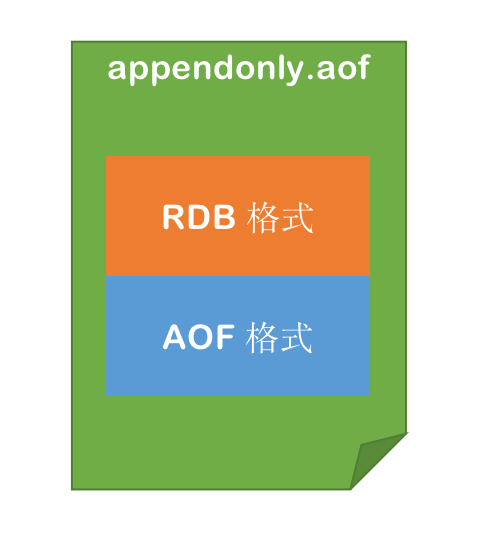
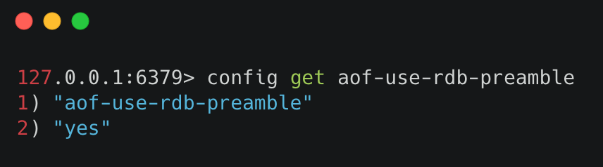
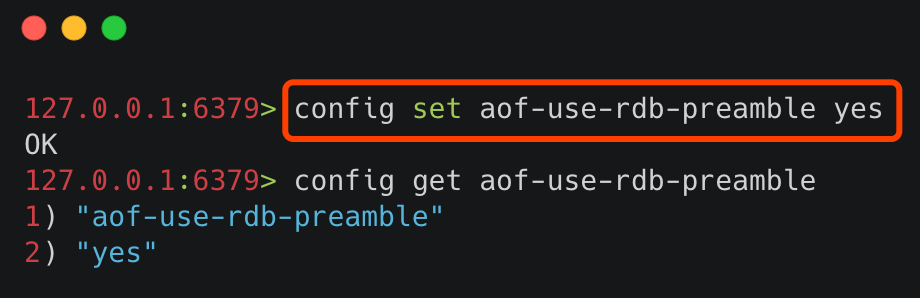
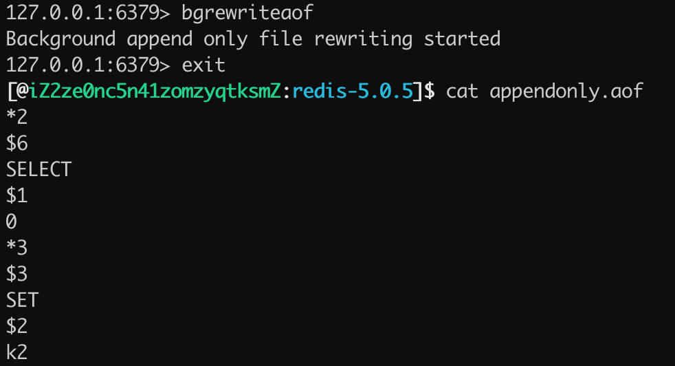
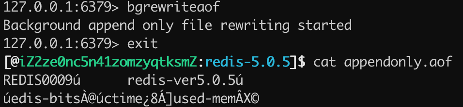
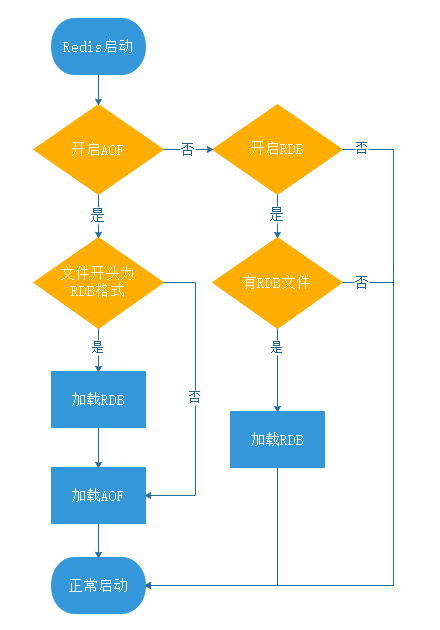

- 01 Redis 是如何执行的.md.html
- 02 Redis 快速搭建与使用.md.html
- 03 Redis 持久化——RDB.md.html
- 04 Redis 持久化——AOF.md.html
- 05 Redis 持久化——混合持久化.md.html
- 06 字符串使用与内部实现原理.md.html
- 07 附录：更多字符串操作命令.md.html
- 08 字典使用与内部实现原理.md.html
- 09 附录：更多字典操作命令.md.html
- 10 列表使用与内部实现原理.md.html
- 11 附录：更多列表操作命令.md.html
- 12 集合使用与内部实现原理.md.html
- 13 附录：更多集合操作命令.md.html
- 14 有序集合使用与内部实现原理.md.html
- 15 附录：更多有序集合操作命令.md.html
- 16 Redis 事务深入解析.md.html
- 17 Redis 键值过期操作.md.html
- 18 Redis 过期策略与源码分析.md.html
- 19 Redis 管道技术——Pipeline.md.html
- 20 查询附近的人——GEO.md.html
- 21 游标迭代器（过滤器）——Scan.md.html
- 22 优秀的基数统计算法——HyperLogLog.md.html
- 23 内存淘汰机制与算法.md.html
- 24 消息队列——发布订阅模式.md.html
- 25 消息队列的其他实现方式.md.html
- 26 消息队列终极解决方案——Stream（上）.md.html
- 27 消息队列终极解决方案——Stream（下）.md.html
- 28 实战：分布式锁详解与代码.md.html
- 29 实战：布隆过滤器安装与使用及原理分析.md.html
- 30 完整案例：实现延迟队列的两种方法.md.html
- 31 实战：定时任务案例.md.html
- 32 实战：RediSearch 高性能的全文搜索引擎.md.html
- 33 实战：Redis 性能测试.md.html
- 34 实战：Redis 慢查询.md.html
- 35 实战：Redis 性能优化方案.md.html
- 36 实战：Redis 主从同步.md.html
- 37 实战：Redis哨兵模式（上）.md.html
- 38 实战：Redis 哨兵模式（下）.md.html
- 39 实战：Redis 集群模式（上）.md.html
- 40 实战：Redis 集群模式（下）.md.html
- 41 案例：Redis 问题汇总和相关解决方案.md.html
- 42 技能学习指南.md.html
- 43 加餐：Redis 的可视化管理工具.md.html
05 Redis 持久化——混合持久化
RDB 和 AOF 持久化各有利弊，RDB 可能会导致一定时间内的数据丢失，而 AOF 由于文件较大则会影响 Redis 的启动速度，为了能同时使用 RDB 和 AOF 各种的优点，Redis 4.0 之后新增了混合持久化的方式。
在开启混合持久化的情况下，AOF 重写时会把 Redis 的持久化数据，以 RDB 的格式写入到 AOF 文件的开头，之后的数据再以 AOF 的格式化追加的文件的末尾。
混合持久化的数据存储结构如下图所示： 
1 开启混合持久化
查询是否开启混合持久化可以使用 config get aof-use-rdb-preamble 命令，执行结果如下图所示：  其中 yes 表示已经开启混合持久化，no 表示关闭，Redis 5.0 默认值为 yes。 如果是其他版本的 Redis 首先需要检查一下，是否已经开启了混合持久化，如果关闭的情况下，可以通过以下两种方式开启：
- 通过命令行开启
- 通过修改 Redis 配置文件开启
1）通过命令行开启
使用命令 config set aof-use-rdb-preamble yes 执行结果如下图所示： 
小贴士：命令行设置配置的缺点是重启 Redis 服务之后，设置的配置就会失效。
2）通过修改 Redis 配置文件开启
在 Redis 的根路径下找到 redis.conf 文件，把配置文件中的 aof-use-rdb-preamble no 改为 aof-use-rdb-preamble yes 如下图所示： 
2 实例运行
当在混合持久化关闭的情况下，使用 bgrewriteaof 触发 AOF 文件重写之后，查看 appendonly.aof 文件的持久化日志，如下图所示：  可以看出，当混合持久化关闭的情况下 AOF 持久化文件存储的为标准的 AOF 格式的文件。 当混合持久化开启的模式下，使用 bgrewriteaof 命令触发 AOF 文件重写，得到 appendonly.aof 的文件内容如下图所示：  可以看出 appendonly.aof 文件存储的内容是 REDIS 开头的 RDB 格式的内容，并非为 AOF 格式的日志。
3 数据恢复和源码解析
混合持久化的数据恢复和 AOF 持久化过程是一样的，只需要把 appendonly.aof 放到 Redis 的根目录，在 Redis 启动时，只要开启了 AOF 持久化，Redis 就会自动加载并恢复数据。 Redis 启动信息如下图所示：  可以看出 Redis 在服务器初始化的时候加载了 AOF 文件的内容。
可以看出 Redis 在服务器初始化的时候加载了 AOF 文件的内容。
1）混合持久化的加载流程
混合持久化的加载流程如下：
- 判断是否开启 AOF 持久化，开启继续执行后续流程，未开启执行加载 RDB 文件的流程；
- 判断 appendonly.aof 文件是否存在，文件存在则执行后续流程；
- 判断 AOF 文件开头是 RDB 的格式, 先加载 RDB 内容再加载剩余的 AOF 内容；
- 判断 AOF 文件开头不是 RDB 的格式，直接以 AOF 格式加载整个文件。
AOF 加载流程图如下图所示：  2）源码解析
Redis 判断 AOF 文件的开头是否是 RDB 格式的，是通过关键字 REDIS 判断的，RDB 文件的开头一定是 REDIS 关键字开头的，判断源码在 Redis 的 src/aof.c 中，核心代码如下所示：
char sig[5]; /* "REDIS" */
if (fread(sig,1,5,fp) != 5 || memcmp(sig,"REDIS",5) != 0) {
// AOF 文件开头非 RDB 格式，非混合持久化文件
if (fseek(fp,0,SEEK_SET) == -1) goto readerr;
} else {
/* RDB preamble. Pass loading the RDB functions. */
rio rdb;
serverLog(LL_NOTICE,"Reading RDB preamble from AOF file...");
if (fseek(fp,0,SEEK_SET) == -1) goto readerr;
rioInitWithFile(&rdb,fp);
// AOF 文件开头是 RDB 格式，先加载 RDB 再加载 AOF
if (rdbLoadRio(&rdb,NULL,1) != C_OK) {
serverLog(LL_WARNING,"Error reading the RDB preamble of the AOF file, AOF loading aborted");
goto readerr;
} else {
serverLog(LL_NOTICE,"Reading the remaining AOF tail...");
}
}
// 加载 AOF 格式的数据
可以看出 Redis 是通过判断 AOF 文件的开头是否是 REDIS 关键字，来确定此文件是否为混合持久化文件的。
小贴士：AOF 格式的开头是 *，而 RDB 格式的开头是 REDIS。
4 优缺点
混合持久化优点：
- 混合持久化结合了 RDB 和 AOF 持久化的优点，开头为 RDB 的格式，使得 Redis 可以更快的启动，同时结合 AOF 的优点，有减低了大量数据丢失的风险。
混合持久化缺点：
- AOF 文件中添加了 RDB 格式的内容，使得 AOF 文件的可读性变得很差；
- 兼容性差，如果开启混合持久化，那么此混合持久化 AOF 文件，就不能用在 Redis 4.0 之前版本了。
5 持久化最佳实践
持久化虽然保证了数据不丢失，但同时拖慢了 Redis 的运行速度，那怎么更合理的使用 Redis 的持久化功能呢？ Redis 持久化的最佳实践可从以下几个方面考虑。
1）控制持久化开关
使用者可根据实际的业务情况考虑，如果对数据的丢失不敏感的情况下，可考虑关闭 Redis 的持久化，这样所以的键值操作都在内存中，就可以保证最高效率的运行 Redis 了。 持久化关闭操作：
- 关闭 RDB 持久化，使用命令：
config set save "" - 关闭 AOF 和 混合持久化，使用命令：
config set appendonly no
2）主从部署
使用主从部署，一台用于响应主业务，一台用于数据持久化，这样就可能让 Redis 更加高效的运行。
3）使用混合持久化
混合持久化结合了 RDB 和 AOF 的优点，Redis 5.0 默认是开启的。
4）使用配置更高的机器
Redis 对 CPU 的要求并不高，反而是对内存和磁盘的要求很高，因为 Redis 大部分时候都在做读写操作，使用更多的内存和更快的磁盘，对 Redis 性能的提高非常有帮助。
参考&鸣谢 https://redis.io/topics/persistence https://blog.csdn.net/qq_36318234/article/details/79994133 https://www.cnblogs.com/wdliu/p/9377278.html